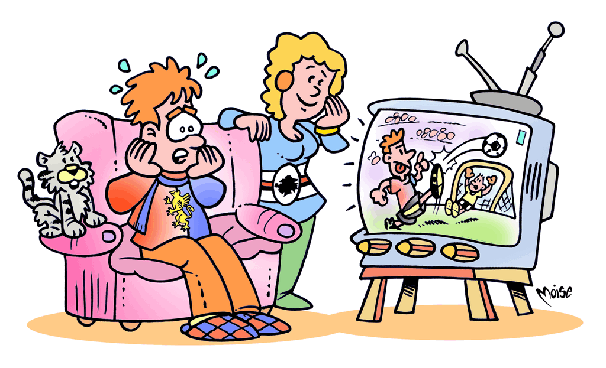

L'oro blu

Il derby, a Genova come altrove, infiamma gli animi
dei tifosi: così l'amarezza e la gioia si ripetono sulle
due sponde calcistiche, con umori opposti a seconda
del risultato. Ma se il risultato (in questo caso,
la soluzione) fosse tutt'altro? Già, perchè apparentemente
parliamo del derby della Lanterna, ma in
realtà, come in tutti gli indovinelli - e questo è
INDOVINELLO
La fidanzata blucerchiata
Se al mio rossoblù faccio girar la testa,
lui lava i piatti e i panni nella cesta.
Se perde in casa dico: “Tu hai sciupato!”;
lui piange… e a me è caro il risultato!
un
indovinello - la chiave di lettura è diversa da quella
che può sembrare.
Leggilo attentamente: gli spunti per risolverlo sono
davvero numerosi… Vuoi un “aiutino”? Naturalmente
la soluzione riguarda qualcosa che molto ha a
che fare con l'acqua, oggetto (prezioso!) di questo
pannello…